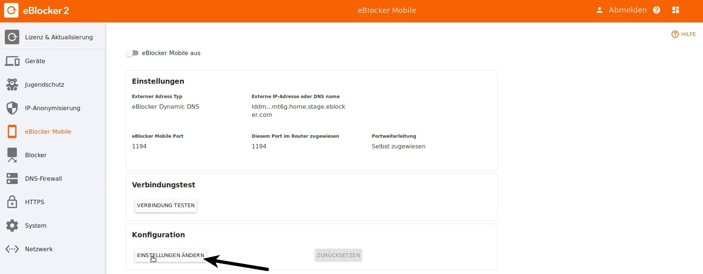
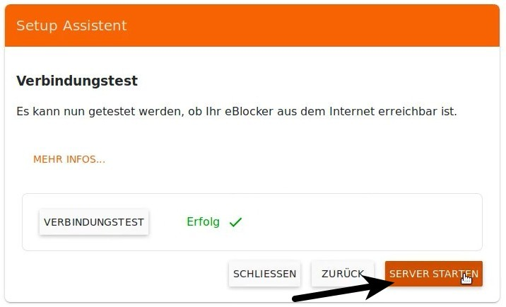
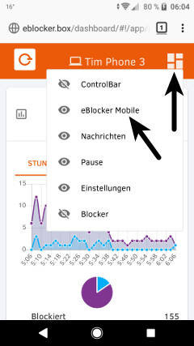
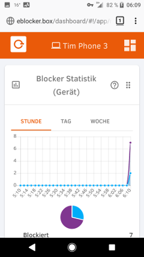

eBlocker Help > Wissensdatenbank > Anwendungsmöglichkeiten
In dieser Anleitung zeigen wir auf, wie Sie eine Portweiterleitung in Ihrem Router einrichten und die eBlocker Mobile Funktion konfigurieren. Anschließend beschreiben wir, wie Sie die Funktion auf einem mobilen Gerät einrichten.
Wichtig: Bitte beachten Sie, dass die durchsichtigen eBlocker (auch bekannt als Vorversions-eBlocker) nach dem Update von eBlockerOS 1.x auf 2.x noch nicht kompatibel mit der eBlocker Mobile Funktion sind. Wir arbeiten zur Zeit an einer Lösung des Problems.
Achtung: Sie sollten eine IPv4 Verbindung von Ihrem Internetprovider gestellt bekommen. eBlocker Mobile funktioniert nicht mit einer IPv6 Verbindung.
Achtung: Für die Nutzung von eBocker Mobile muss die eBlocker DNS-Firewall aktiviert sein.
Eine Anleitung zum Thema DNS-Firewall finden Sie hier: „eBlocker DNS Firewall“.
Leiten Sie zunächst in Ihrem Router den Port 1194 an den eBlocker weiter.
Achtung: Wenn Sie die eBlocker Mobile Funktion nutzen wollen, muss Ihr eBlocker direkt mit Ihrem Router verbunden sein.
Hilfe zur Einrichtung einer Portweiterleitung finden Sie hier: „Wie richte ich eine Portweiterleitung am Router ein?“
Tipp vom Support: Vergeben Sie für Ihren eBlocker eine feste IP-Adresse.
Hilfe dazu finden Sie hier: „Kann man dem eBlocker eine feste IP-Adresse zuweisen?“
Damit Sie sich jederzeit von unterwegs mit Ihrem eBlocker zuhause verbinden können, laden Sie bitte eine OpenVPN App auf Ihr mobiles Gerät herunter.
Eine Liste von Apps finden Sie hier: „Wo kann ich eine passende OpenVPN App herunterladen?“
Für ein Android Smartphone, das wir in unserem Beispiel verwenden, laden Sie die App „OpenVPN Connect“ runter. Bitte stellen Sie sicher, dass sich Ihr Smartphone im WLAN befindet.
Öffnen Sie an Ihrem PC, Laptop o. a. die eBlocker Einstellungen (diese erreichen Sie über die URL eblocker.box). Klicken Sie in der Karte „Einstellungen“ auf „Einstellungen öffnen“ und wählen Sie dort den Menüpunkt „eBlocker Mobile“ aus.
Achtung: Wenn Sie schon einmal eBlocker Mobile aktiviert haben, klicken Sie zuerst auf „ZURÜCKSETZEN“. Das Zurücksetzen einer aktivierten eBlocker Mobile Konfiguration kann einige Sekunden dauern.
Nun klicken Sie auf „EINSTELLUNGEN ÄNDERN“.

Der eBlocker Mobile Assistent öffnet sich.
Klicken Sie auf „WEITER“.
Wählen Sie „Ich möchte den eBlocker Dynamic DNS Dienst zum Testen von eBlocker Mobile nutzen“ aus und klicken auf „WEITER“.

Bestätigen Sie den folgenden Dialog und klicken Sie auf "WEITER".

Da Sie – wie zu Beginn dieser Anleitung beschrieben – den Port 1194 in den Router-Einstellungen bereits dem eBlocker zugewiesen haben, wählen Sie „Ich werde die Ports selber zuweisen“ aus und klicken auf „WEITER“.

Bestätigen Sie im folgenden Dialog, dass Sie in Ihrem Router den Port 1194 dem eBlocker zugewiesen haben und klicken anschließend auf „EINSTELLUNGEN ÜBERNEHMEN“.

In dem folgenden Dialog führen Sie sicherheitshalber einen Verbindungstest durch.

Nach dem erfolgreichen Test klicken Sie auf „SERVER STARTEN“.

Achtung: Es kann bis zu 60 Sekunden dauern, ehe der Server gestartet wird.
Klicken Sie anschließend auf „SCHLIESSEN“.

In den eBlocker Einstellungen sehen Sie nun, dass eBlocker Mobile aktiviert ist.

Rufen Sie auf Ihrem mobilen Gerät im Browser setup.eblocker.com oder eblocker.box auf.
Klicken Sie oben rechts auf das Dashboard Icon und überprüfen, ob die eBlocker Mobile Karte angezeigt wird. Wenn dies nicht der Fall ist, klicken Sie bitte auf „eBlocker Mobile“ in der Liste.

Scrollen Sie im Dashboard nun bis zur eBLocker Mobile karte. Der eBlocker erkennt Ihr mobiles Gerät und schlägt daher „Android“ in der Liste vor. Sollte dies nicht der Fall sein, treffen Sie die Auswahl bitte selbst.
Klicken Sie auf „KONFIGURATION HERUNTERLADEN“, um die eBlocker OpenVPN Konfiguration auf dem Smartphone zu speichern.

Öffnen Sie nun die OpenVPN App auf dem Smartphone und wählen in der App „OVPN Profile“ aus.


Wählen Sie die heruntergeladene eBlocker OpenVPN Konfiguration aus und klicken auf „IMPORT“.

Die OpenVPN Konfiguration des eBlockers wird nun importiert und kann mit „ADD“ zu den Profilen hinzugefügt werden.

Jetzt aktivieren Sie die Verbindung in der OpenVPN App.

Auf dem Smartphone wird die VPN Verbindung mit einem Schlüssel dargestellt (die Anzeige kann je nach Betriebssystem variieren).

Bitte deaktivieren Sie nun die WLAN-Verbindung auf dem Smartphone.
In einem Browser des Smartphones geben Sie die Adresse setup.eBlocker.com oder eblocker.box ein. Dass Sie nun den vollen Schutz des eBlockers auch mobil genießen, erkennen Sie an dem angezeigten eBlocker Dashboard. Herzlichen Glückwunsch!

Sollten Sie Probleme bei der Einrichtung haben, lesen Sie bitte folgende Tipps: „Fehlerbehebung“.